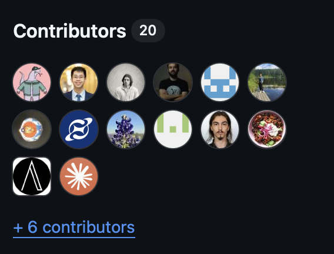
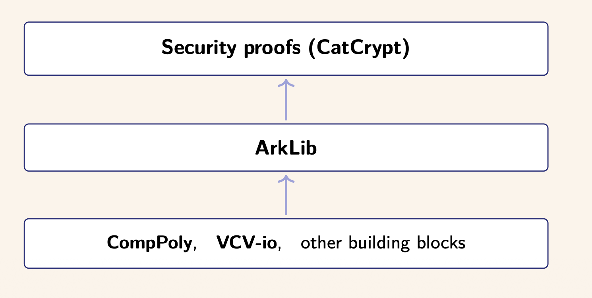
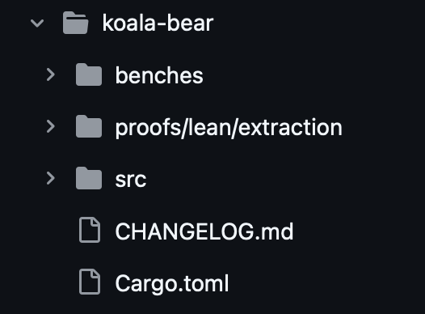
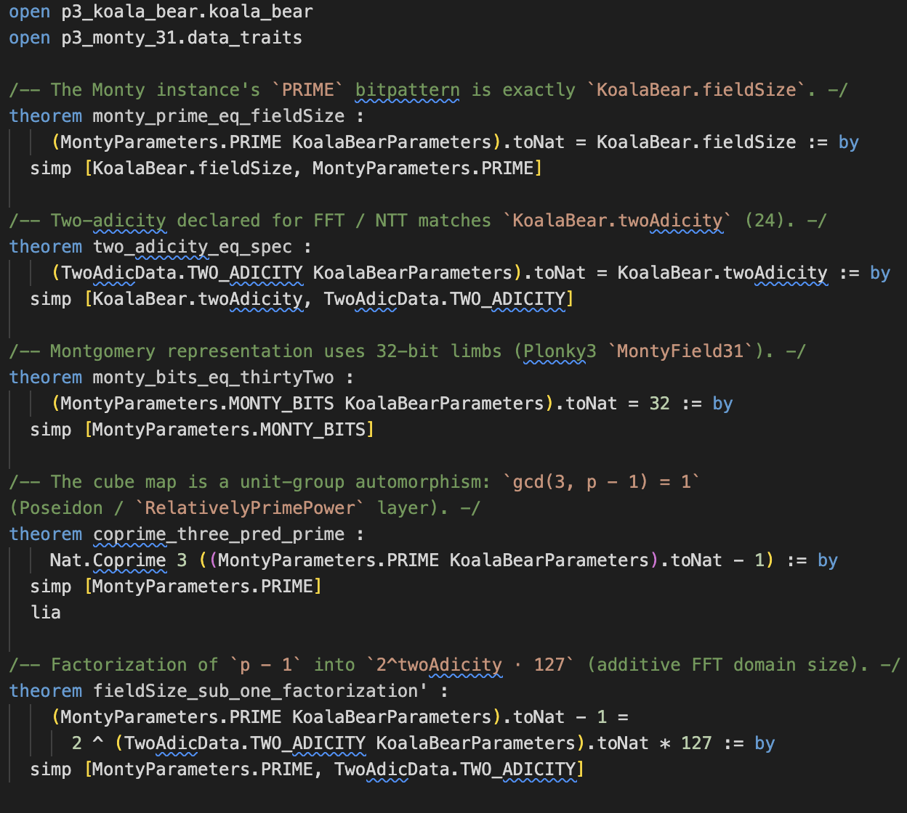

Computable Polynomials in Lean
Derek Sorensen, Ethereum Foundation
dhsorens, quangvdao, alexanderlhicks, Ferinko, klausnat, eliasjudin, Julek, desmondcoles1, DimitriosMitsios, andreiburdusa, FawadHa1der, olympichek, erdkocak, katyhr, shreyas-londhe, z-tech
aristotle, aleph-prover, claude, cursoragent

Arklib— specify (or build?) SNARKS in Lean
CompPoly is the computable core of Arklib
Polynomials
Fields
Formal specifications are programs
They have bugs
They can be tested
Specs are difficult to write correctly
Especially for new technologies.
Some of the best specifications are formally verified reference implementations

Polynomials are essential in SNARKS.
Arithmetization
Polynomial IOPs
Polynomial commitments
FRI
...
Certified:
Computer algebra systems (CAS)
Turing machines with composition
Numerical methods
Coding theory
...
A genuine use case for CSLib as mirror to Mathlib
Be a canonical reference of computable polynomials in Lean
Flexible and usable across the Lean ecosystem
Be an efficient computable base for specifications (and more) in Lean
Computable algebra operations more generally (CompAlg?)
The structure of the library
The roadmap and goals of the library
Formal verification with CompPoly
General framework for (computable) verification in Lean.
Univariate polynomials
Bivariate polynomials
Multivariate polynomials
Multilinear polynomials
Field specifications (etc.)
namespace slides.Univariate
-- Raw polynomials are coefficient arrays
def CPolynomial.Raw (R : Type*) := Array R
-- the IsCanonical predicate: no trailing zeros
def IsCanonical [Zero R] (p : CPolynomial.Raw R) : Prop :=
∀ hp : p.size > 0, p.getLast hp ≠ 0
-- Canonical polynomials are a subtype
def CPolynomial (R : Type*) [Zero R] :=
{ p : CPolynomial.Raw R // Raw.IsCanonical p }
end slides.Univariate
namespace slides.Bivariate
-- Bivariate polynomials are nested polynomials
def CBivariate (R : Type*) [Zero R] :=
CPolynomial (CPolynomial R)
-- inspired by Mathlib's bivariate polynomials
end slides.Bivariate
namespace slides.Multivariate
/-- The subtype of polynomials with no zero coefficients. -/
def Lawful (n : ℕ) (R : Type*) [Zero R] : Type _ :=
{p : CPoly.Unlawful n R // p.isNoZeroCoef}
/-- A computable multivariate polynomial in `n` variables
with coefficients in `R`. -/
abbrev CMvPolynomial (n : ℕ) (R : Type*) [Zero R] :
Type _ := Lawful n R
end slides.Multivariate
namespace slides.Multivariate
/--
Polynomial in `n` variables with coefficients in `R`.
Internally represented as a tree map from monomials to
coefficients.
-/
abbrev Unlawful (n : ℕ) (R : Type*) : Type _ :=
Std.ExtTreeMap (CPoly.CMvMonomial n) R
(Ord.compare (α := CPoly.CMvMonomial n))
/-- Check if the polynomial has no zero coefficients. -/
abbrev isNoZeroCoef [Zero R] (p : Unlawful n R) : Prop :=
∀ (m : CPoly.CMvMonomial n), p[m]? ≠ some 0
end slides.Multivariate
namespace slides.Multilinear
/-- `CMlPolynomial n R` is the type of multilinear
polynomials in `n` variables over a ring `R`.
It is represented by its monomial coefficients as
a `Vector` of length `2^n`.
The indexing is **little-endian** (i.e. the least
significant bit is the first bit). -/
@[reducible]
-- coefficient of monomial basis
def CMlPolynomial (R : Type*) (n : ℕ) := Vector R (2 ^ n)
def CMlPolynomial.mk {R : Type*}
(n : ℕ) (v : Vector R (2 ^ n)) : CMlPolynomial R n := v
end slides.Multilinear
Following Mathlib:
Basic polynomial operations
Basic computable API
ToMathlib. theorems establishing:
Ring isomorphism
Equivalence of the API
namespace slides.BasicOperations
variable {R: Type*} [Semiring R] [BEq R] [LawfulBEq R]
-- commutative addition
theorem add_comm
(p q : CPolynomial R) : p + q = q + p := byR:Type u_1inst✝²:Semiring Rinst✝¹:BEq Rinst✝:LawfulBEq Rp:CPolynomial Rq:CPolynomial R⊢ p + q = q + p
apply CPolynomial.extR:Type u_1inst✝²:Semiring Rinst✝¹:BEq Rinst✝:LawfulBEq Rp:CPolynomial Rq:CPolynomial R⊢ ↑(p + q) = ↑(q + p)
simpa using (Raw.add_comm p.val q.val)All goals completed! 🐙
-- associative addition
theorem add_assoc
(p q r : CPolynomial R) : p + q + r = p + (q + r) := byR:Type u_1inst✝²:Semiring Rinst✝¹:BEq Rinst✝:LawfulBEq Rp:CPolynomial Rq:CPolynomial Rr:CPolynomial R⊢ p + q + r = p + (q + r)
apply CPolynomial.extR:Type u_1inst✝²:Semiring Rinst✝¹:BEq Rinst✝:LawfulBEq Rp:CPolynomial Rq:CPolynomial Rr:CPolynomial R⊢ ↑(p + q + r) = ↑(p + (q + r))
simpa using (Raw.add_assoc p.val q.val r.val)All goals completed! 🐙
end slides.BasicOperations
namespace slides.API.Univariate
variable {R: Type*}
-- The coefficient of `X^i` in the polynomial
@[reducible]
def coeff [Zero R] (p : CPolynomial R) (i : ℕ) : R :=
p.val.coeff i
-- The constant polynomial `C r`
def C [Zero R] [BEq R] [LawfulBEq R] (r : R)
: CPolynomial R :=
⟨(Raw.C r).trim, Raw.Trim.isCanonical_trim (Raw.C r)⟩
-- The variable `X`
def X [Semiring R] [BEq R] [LawfulBEq R] [Nontrivial R] :
CPolynomial R :=
⟨Raw.X, Raw.Trim.isCanonical_of_trim_eq Raw.X_canonical⟩
end slides.API.Univariate
namespace slides.API.Equivalence
variable {R : Type*} [Ring R] [BEq R] [LawfulBEq R]
lemma toPoly_add (p q : CPolynomial R) :
(p + q).toPoly = p.toPoly + q.toPoly := byR:Type u_1inst✝²:Ring Rinst✝¹:BEq Rinst✝:LawfulBEq Rp:CPolynomial Rq:CPolynomial R⊢ (p + q).toPoly = p.toPoly + q.toPoly
apply Raw.toPoly_addAll goals completed! 🐙
lemma toPoly_sub (p q : CPolynomial R) :
(p - q).toPoly = p.toPoly - q.toPoly := byR:Type u_1inst✝²:Ring Rinst✝¹:BEq Rinst✝:LawfulBEq Rp:CPolynomial Rq:CPolynomial R⊢ (p - q).toPoly = p.toPoly - q.toPoly
change (p + -q).toPoly = p.toPoly + -q.toPolyR:Type u_1inst✝²:Ring Rinst✝¹:BEq Rinst✝:LawfulBEq Rp:CPolynomial Rq:CPolynomial R⊢ (p + -q).toPoly = p.toPoly + -q.toPoly
rw [toPoly_add, toPoly_neg]All goals completed! 🐙
lemma toPoly_mul (p q : CPolynomial R) :
(p * q).toPoly = p.toPoly * q.toPoly := byR:Type u_1inst✝²:Ring Rinst✝¹:BEq Rinst✝:LawfulBEq Rp:CPolynomial Rq:CPolynomial R⊢ (p * q).toPoly = p.toPoly * q.toPoly
ext iR:Type u_1inst✝²:Ring Rinst✝¹:BEq Rinst✝:LawfulBEq Rp:CPolynomial Rq:CPolynomial Ri:ℕ⊢ (p * q).toPoly.coeff i = (p.toPoly * q.toPoly).coeff i
exact toPoly_mul_coeffC p q iAll goals completed! 🐙
end slides.API.Equivalence
::note
HARD TO TYPECHECK ::
#checkCompPoly.CPolynomial.toPoly.{u_1} {R : Type u_1} [Zero R] [Semiring R] (p : CPolynomial R) : Polynomial R toPoly
CompPoly.CPolynomial.toPoly.{u_1} {R : Type u_1} [Zero R] [Semiring R] (p : CPolynomial R) : Polynomial R#checkPolynomial.toImpl.{u_1} {R : Type u_1} [Semiring R] (p : Polynomial R) : Raw R Polynomial.toImpl
Polynomial.toImpl.{u_1} {R : Type u_1} [Semiring R] (p : Polynomial R) : Raw R#checkCompPoly.CPolynomial.ringEquiv.{u_1} {R : Type u_1} [Semiring R] [BEq R] [LawfulBEq R] [Nontrivial R] :
CPolynomial R ≃+* Polynomial R ringEquiv
CompPoly.CPolynomial.ringEquiv.{u_1} {R : Type u_1} [Semiring R] [BEq R] [LawfulBEq R] [Nontrivial R] :
CPolynomial R ≃+* Polynomial R
Proof strategy:
use the isomorphism to get into Polynomial
then use theory from Polynomial
namespace slides.Proofs
open CLagrange
variable {R: Type*} [Field R] [BEq R] [LawfulBEq R]
-- basis divisor
def basisDivisor (xᵢ xⱼ : R) : CPolynomial R :=
C (xᵢ - xⱼ)⁻¹ * (X - C xⱼ)
-- equivalence with mathlib
lemma cbasisDivisor_eq_basisDivisor {xᵢ xⱼ : R} :
(basisDivisor xᵢ xⱼ).toPoly =
Lagrange.basisDivisor xᵢ xⱼ := byR:Type u_1inst✝²:Field Rinst✝¹:BEq Rinst✝:LawfulBEq Rxᵢ:Rxⱼ:R⊢ (basisDivisor xᵢ xⱼ).toPoly = Lagrange.basisDivisor xᵢ xⱼ
unfold basisDivisor Lagrange.basisDivisorR:Type u_1inst✝²:Field Rinst✝¹:BEq Rinst✝:LawfulBEq Rxᵢ:Rxⱼ:R⊢ (C (xᵢ - xⱼ)⁻¹ * (X - C xⱼ)).toPoly = Polynomial.C (xᵢ - xⱼ)⁻¹ * (Polynomial.X - Polynomial.C xⱼ)
simp only [toPoly_mul, C_toPoly, toPoly_sub, X_toPoly]All goals completed! 🐙
end slides.Proofs
Univariate: FFT/NTT, batch evaluation, ...
Multilinear: folding, batch evaluation, ...
Bivariate: efficient factorization, ...
Fast field arithmetic
Exponential optimization
Zeta/Möbius transform formulas
Error-correcting interpolation algorithms
Efficient decoding
...
namespace slides.Exponents
open Raw
variable {R: Type*}
-- naive exponentiation
def pow [Semiring R] [BEq R] (p : CPolynomial.Raw R) (n : Nat) : CPolynomial.Raw R :=
(mul p)^[n] (C 1)
-- efficient exponentiation
def powBySq [Semiring R] [BEq R] (p : CPolynomial.Raw R) : Nat → CPolynomial.Raw R
| 0 => C 1
| n + 1 =>
let half := powBySq p ((n + 1) / 2)
let sq := mul half half
if (n + 1) % 2 = 0 then sq else mul p sq
decreasing_by omegaAll goals completed! 🐙
end slides.Exponents
namespace slides.Horner
variable {S R : Type*} [Semiring R] [Semiring S]
-- polynomial evaluation
def eval₂ (f : R →+* S) (x : S) (p : CPolynomial.Raw R) : S :=
p.zipIdx.foldl (fun acc ⟨a, i⟩ => acc + f a * x ^ i) 0
-- evaluate p at x over f
def eval₂Horner (f : R →+* S) (x : S) (p : CPolynomial.Raw R) : S :=
p.foldr (fun a acc => acc * x + f a) 0
-- -- Horner evaluation agrees with the sum-of-powers evaluation
-- theorem eval₂Horner_eq_eval₂
-- (f : R →+* S) (x : S) (p : CPolynomial.Raw R) :
-- eval₂Horner f x p = eval₂ f x p := by ...
end slides.Horner
Rust to Lean workflow:
Extract Rust to Lean
Import CompPoly Specs
Prove correctness


the end.